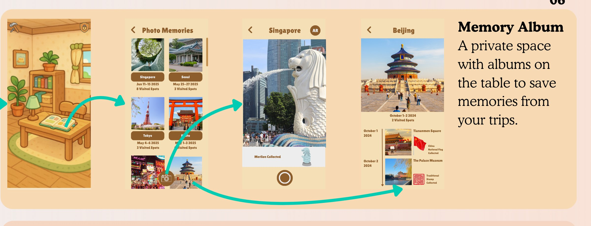
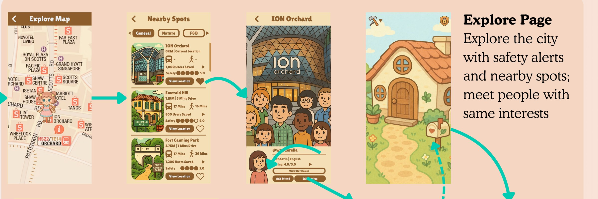
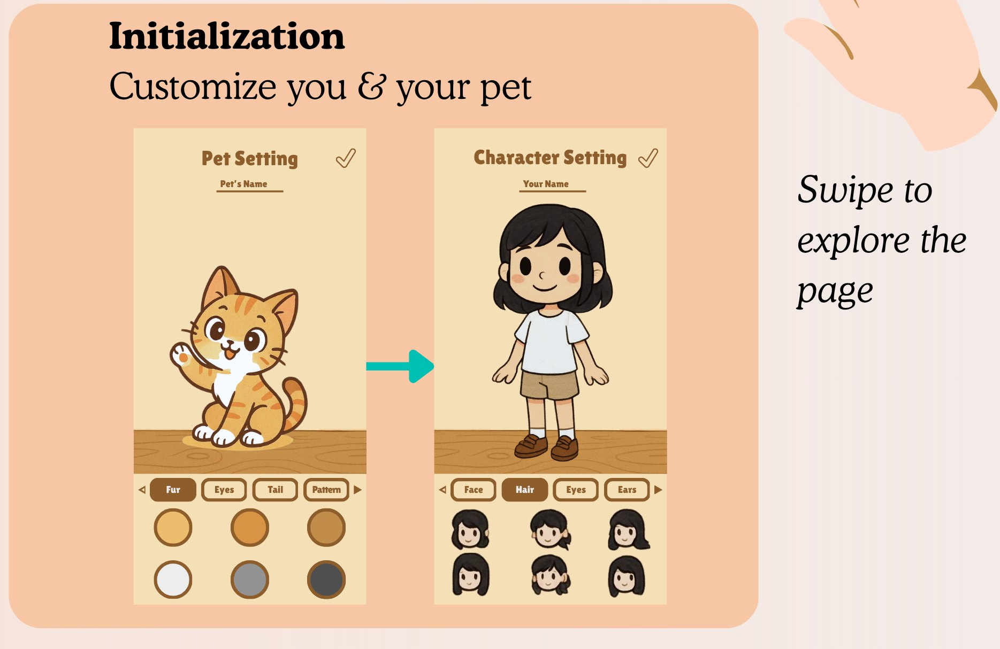
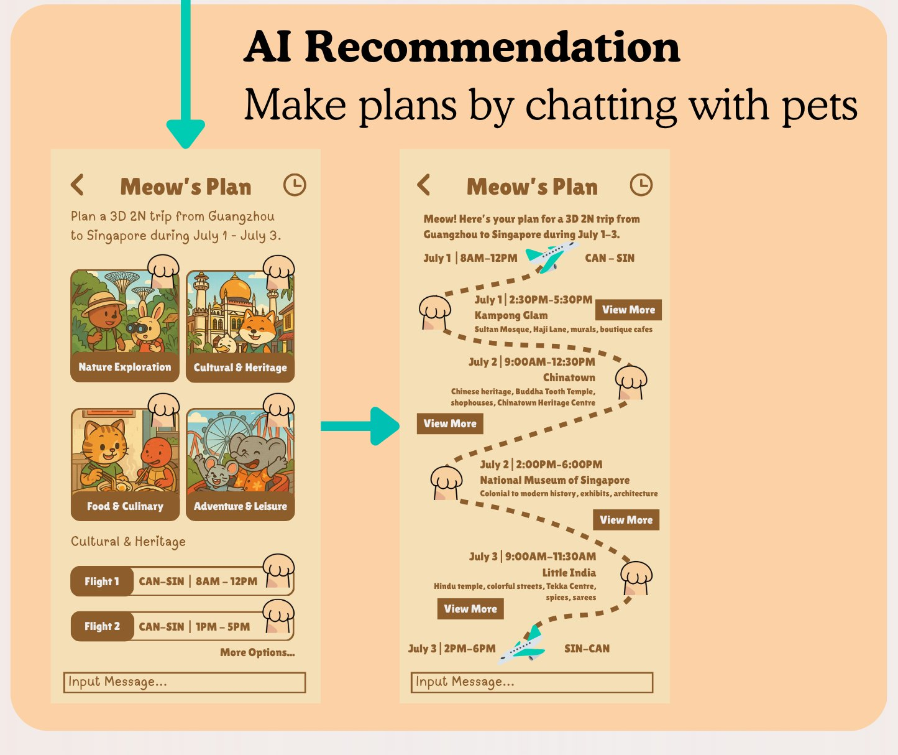
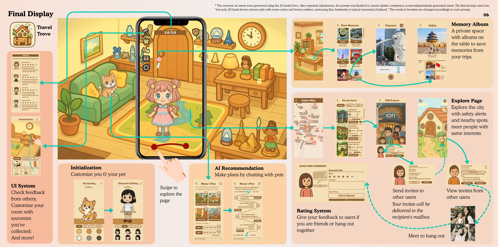
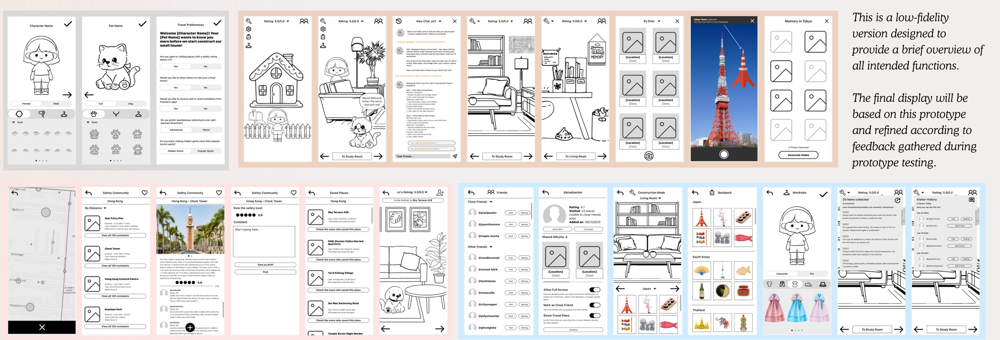
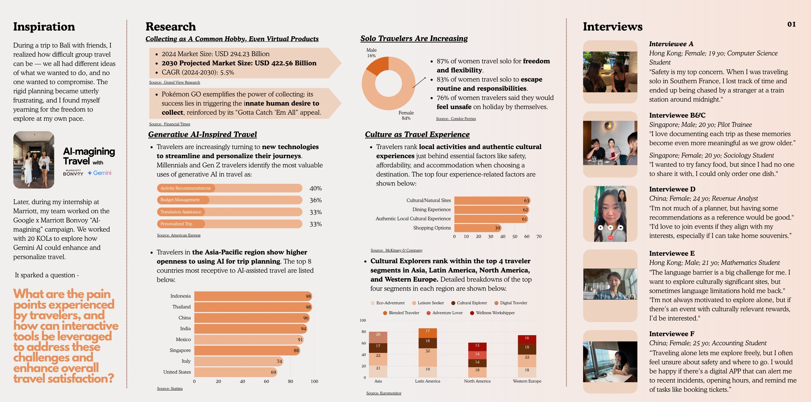
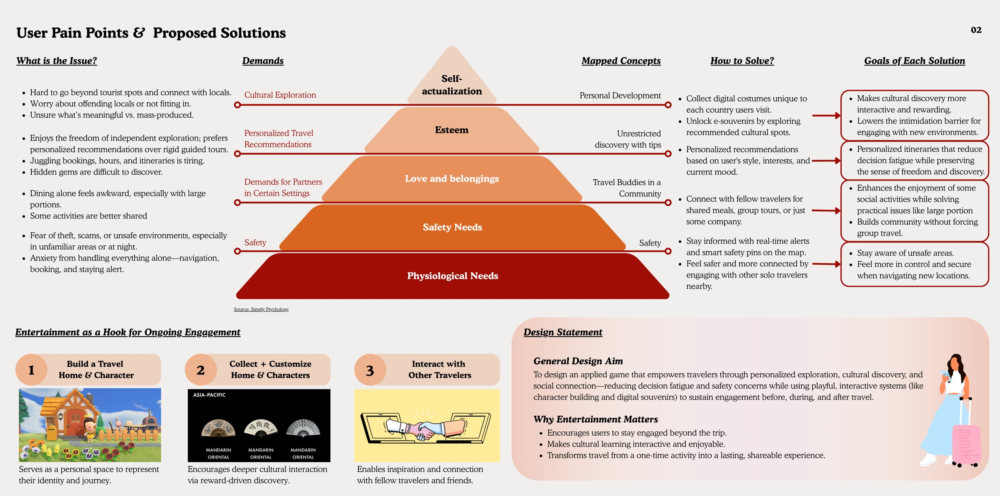
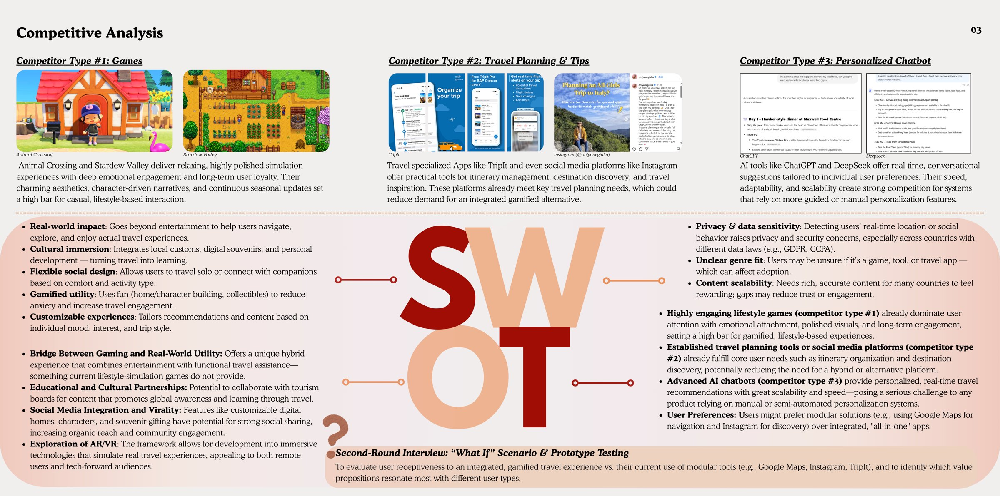
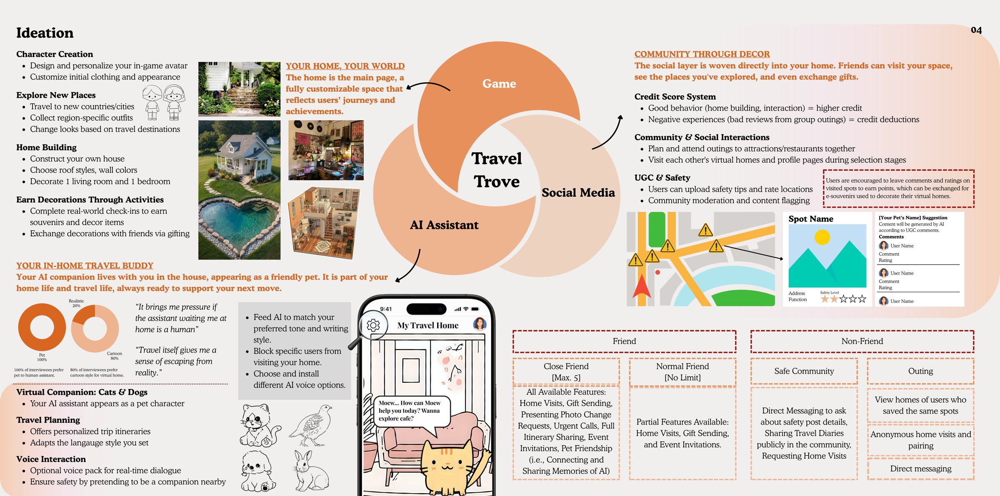

Technical art highlights
- Trained a style LoRA and pinned a ComfyUI workflow for consistent concept assets
- Used IP-Adapter and ControlNet to hold palette, scale and framing across a batch
- Drove batch generation through the ComfyUI API from a place list
- Automated background removal and upscale so output dropped straight into the UI
01Overview
TravelTrove is a gamified travel app that turns your trips into a cozy digital home. Exploring real cities earns e-souvenirs to decorate your virtual house, and an AI pet companion plans personalized itineraries, flags safety concerns and connects you with like-minded travelers.
It’s a design and research project, but the technical-art story is how I used generative AI at the concept stage: I built a pinned ComfyUI workflow – style LoRA, style reference, framing control, fixed sampling – so dozens of independently generated souvenir assets read as one coherent art style, then built everything into a hi-fi Figma prototype.

02My contributions
AI concept-asset pipeline
Trained a style LoRA, pinned a ComfyUI graph around it, and batched a city’s whole souvenir set through the API so the style held across every asset.
User & market research
Six first-round interviews, market data on solo and AI-assisted travel, Maslow-based pain-point mapping and a SWOT.
UX & prototype
Low-fi wireframes → prototype testing → hi-fi Figma prototype covering onboarding, home, AI planner, explore map and social features.
Testing & iteration
Ran prototype tests with live walkthroughs and folded feedback into customization, privacy and safety features.
03AI concept-art pipeline
The app needs a lot of collectible art: a souvenir for every landmark, in every city, all reading as one game. Hand-painting all of it for a concept wasn’t realistic, and a raw text-to-image call drifts in style from run to run. I treated it the way I would treat any asset pipeline: lock everything except the subject, then batch it.
The stack
ComfyUINode-graph runner, so the whole generation is a saved JSON workflow rather than a chat history. The graph is the thing under version control.
SDXL checkpointBase model, fixed for the whole set. Changing checkpoints mid-project is the single fastest way to lose style consistency.
Style LoRATrained in kohya_ss on ~40 curated reference frames in the cozy-isometric look I was targeting (Animal Crossing-style: flat warm palette, brown outlines, soft shading). Applied at a fixed weight – see the section below for how it was trained and tuned.
IP-AdapterA single style reference image on every run, so the LoRA has a second anchor and new subjects can’t pull the palette around.
ControlNet (depth / lineart)Feeds a simple silhouette block-in, so each souvenir lands at the same scale, angle and framing instead of a random camera.
Fixed samplingSame sampler, steps, CFG and seed schedule across the batch. Only the subject token moves.
RMBG + Real-ESRGANBackground removal to transparent PNG, then upscale, so assets drop straight into the UI as sprites.
Training the style LoRA
A LoRA is a small low-rank delta added to the base model’s attention weights. That one fact decided almost every choice below: because it is a delta, it biases the model rather than filtering the output, and because it is low-rank, it has only so much capacity – which is a feature when what you want it to learn is a look and not a set of objects.
Dataset · ~40 framesCurated for style, not subject. I deliberately picked frames with different objects – furniture, exteriors, characters, props – so the network had nothing consistent to latch onto except the rendering. Anything with UI, text or a strong recognisable silhouette was cut.
Prep · 1024 bucketsCropped into SDXL’s resolution buckets so nothing was squashed. Aspect distortion teaches the model the distortion.
Captions · describe the subject, never the styleThis is the part people get backwards. Whatever you caption becomes variable; whatever you leave out gets absorbed into the LoRA itself. So I captioned the contents (“a wooden stool, a potted fern”) and never wrote “warm palette” or “brown outlines” – those had to become the default, not a phrase I would need to remember to type.
Rank · dim 12 / alpha 6Deliberately small. Rank is capacity: a high-rank LoRA has enough room to memorise the training images, and then new subjects start coming out wearing shapes from the dataset. A style is a low-dimensional change, so it should get a low-dimensional adapter.
Learning rate · 1e-4 UNet, 4e-5 text encoderThe text encoder is kept on a much shorter leash. Train it hard and the trigger token starts swallowing the whole prompt, so the model stops listening to the subject – exactly the failure I was trying to avoid.
Schedule · ~1600 steps, saved every epochBatch 2, cosine decay, roughly 10 epochs over 40 images. I saved a checkpoint per epoch and chose between them by generating the same held-out subjects with each, not by looking at the loss curve. Loss going down and the LoRA being usable are different things.
No regularisation imagesPrior preservation exists to stop a concept bleeding into everything. For a style LoRA the bleed is the product, so it would have worked against me.
Reading what the LoRA was doing, and changing strategy
Once you know it is a low-rank bias on attention, the failure modes stop being mysterious and start telling you which lever to pull. Two symptoms, two very different fixes:
Overfitting · new subjects inherit old shapesWhen a prompt for a souvenir came back looking like a piece of furniture from the training set, that is capacity being spent on memorisation. The fix is at training time – drop the rank, cut epochs, broaden the dataset – not at inference. Turning the weight down instead just gives you a washed-out version of the same wrong thing.
Underfitting · style drifts between runsOutlines thinning out, palette wandering. That is the opposite problem, and lowering the LoRA weight or leaning on style words in the prompt only papers over it. More epochs or a slightly higher rank is the real answer.
Weight · swept, not guessedI generated the same three subjects at 0.4 / 0.6 / 0.8 / 1.0 and read them as a set. Below about 0.6 the palette drifted; at 1.0 the model started ignoring the subject and reproducing composition from the dataset. 0.78 was where style held and prompts were still obeyed.
Composition · let each tool hold one thingBecause a LoRA is additive, it stacks with other conditioning instead of competing with it. Rather than pushing the LoRA hard enough to hold palette and framing and colour key – which is how you end up overfitting – I let the LoRA own brushwork and outlines, IP-Adapter own the overall colour key, and ControlNet own scale and framing. Three light constraints at three different injection points beat one heavy one.
Checkpoint couplingThe delta is trained against one specific base model, so it is only meaningful on that model. This is the real reason the checkpoint is pinned in the graph: changing it does not degrade the LoRA, it invalidates it.
The most useful habit was judging every change against the same small set of held-out subjects that never appeared in training. A LoRA can look excellent on things it has seen and fall apart on the first new landmark, and a batch of souvenirs is nothing but new landmarks.
Lock the style, vary only the subject
Once the graph was stable, the only thing that changed between assets was two tokens. Everything else – model, LoRA, weight, reference image, sampler, seed offset – stayed pinned, which is exactly the master-material-and-instances pattern from a real material library.
sd_xl_base_1.0.safetensorscozy_isometric_v3.safetensors weight 0.78style_ref_shelf_01.png weight 0.45depth silhouette_blockin.png · 0.6dpmpp_2m · karras · 28 steps · cfg 5.5884213 + indexlow-poly 2D hand-drawn cartoon, warm palette, brown outlines, centred on white – the Eiffel Tower, a cafe chair, a wedge of brie of ParisSix of the seven lines never change. That is the whole trick: consistency comes from the pinned graph, not from how well the prompt was phrased that day.
- Explore: generate candidates for several landmarks off the base checkpoint and measure how far apart they drift on line weight, palette and rendering.
- Train: curate ~40 reference frames of the target look, caption only their contents, and train a low-rank style LoRA; pick the epoch by testing it on subjects that were not in the training set.
- Pin the graph: freeze checkpoint, LoRA weight, IP-Adapter reference, ControlNet preprocessor and sampler settings into one saved ComfyUI workflow.
- Batch: drive that workflow through the ComfyUI API from a list of places, swapping only the subject tokens, so a city’s whole souvenir set comes out in one run.
- Post: background removal to transparent PNG, upscale, then drop into the Figma UI and judge the set together, not one image at a time.
Judging generated assets as a set was the part that mattered. Any single souvenir looks fine; style drift only shows up when twelve of them sit on one shelf in the virtual room.


04Prototype




05Challenges & solutions
AI assets didn’t match each other
Each generation came back with different line weights, palettes and rendering styles, so twelve souvenirs on one shelf didn’t read as one game.
Pin the graph, not the prompt
A style LoRA plus a fixed IP-Adapter reference, ControlNet framing and sampler settings, saved as one ComfyUI workflow. Only the subject tokens vary, so consistency is a property of the pipeline rather than of how well I phrased a prompt that day.
Is it a game, a tool or a social app?
The SWOT flagged an unclear genre fit and strong competitors: cozy games, travel planners and AI chatbots.
Entertainment as the hook, utility as the value
The cozy home and collection loop drives engagement. Planning, safety and community make it useful on a real trip.
Safety and privacy concerns
Interviewees ranked safety first, but location and home visits raise privacy risks.
Feedback-driven safety features
Added real-time safety alerts, misconduct reporting, an emergency button, close-friend tiers and visit blocking after prototype testing.
06Research



